Introduction
The purpose of this document is to showcase how N-mixture models (Royle, 2004) may be used with the NABat data pipeline to model colony counts and capture records.
Model description
N-mixture model
The following is a condensed description of the model discussed by Royle (2004). Let \(N_i\) denote the number of individuals available for capture at site \(i\) and \(p_{ij}\) denote the probability of detecting an individual on visit \(j\) to site \(i\). Then, \[ \begin{split} N_i &\sim \text{Poisson}(\lambda_i) \\ y_{ij} &\sim \text{Binomial}(N_i, p_{ij}) \end{split} \] Alternatively, a negative binomial sampling model can be placed on the the latent number of individuals available for capture. \[ \begin{split} N_i &\sim \text{Negative binomial}(\mu_i, \phi) \\ y_{ij} &\sim \text{Binomial}(N_i, p_{ij}) \end{split} \]
Zero-inflated N-mixture model
In some cases, some sites may not be tenable for the target species. To account for the extra zeros induced by habitat insuitability, an occupancy layer can be added, resulting in a zero-inflated N-mixture model. \[ \begin{split} Z_i &\sim \text{Bernoulli}(\psi_i) \\ N_i | z_i&\sim \text{Negative binomial}(z_i * \mu_i, \phi) \\ y_{ij} | N_i &\sim \text{Binomial}(N_i, p_{ij}) \end{split} \]
Simulated experiments
Poisson N-mixture model
{
for (site in 1:nsites) {
log(lambda[site]) <- inprod(alpha[1:p_alpha], W[site,
1:p_alpha])
N[site] ~ dpois(lambda = lambda[site])
}
for (row in 1:nrows) {
logit(p[row]) <- inprod(delta[1:p_delta], V[row, 1:p_delta])
y[row] ~ dbinom(prob = p[row], size = N[site_ndx[row]])
}
for (i in 1:p_alpha) {
alpha[i] ~ dnorm(0, sd = 2)
}
for (i in 1:p_delta) {
delta[i] ~ dnorm(0, sd = 2)
}
}Simulated data
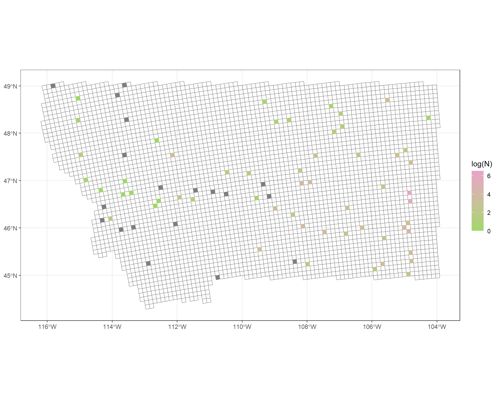
Fit model
Diagnostics
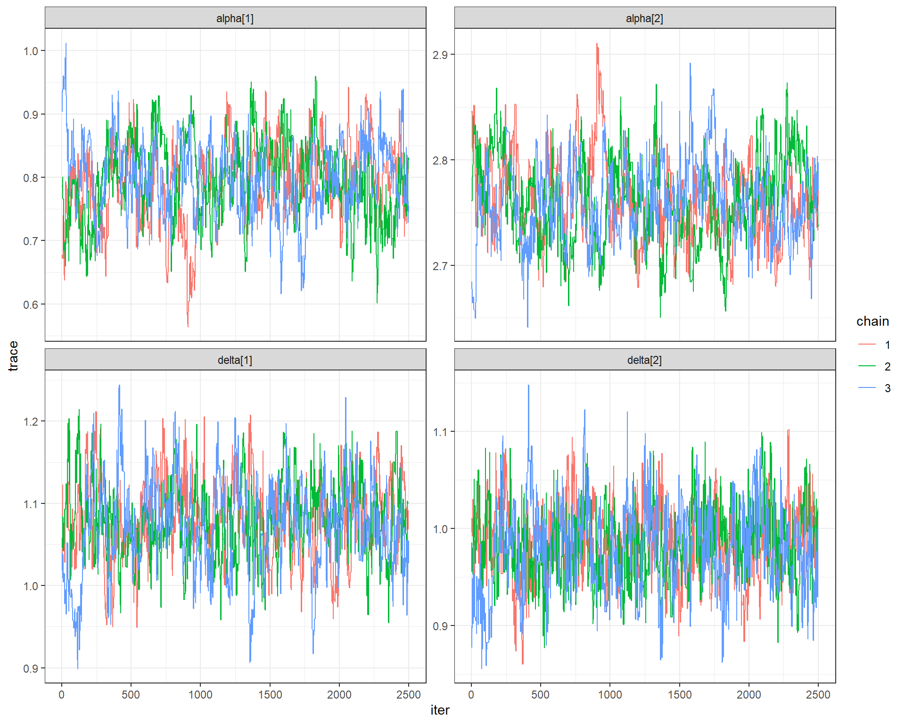
Posterior summaries
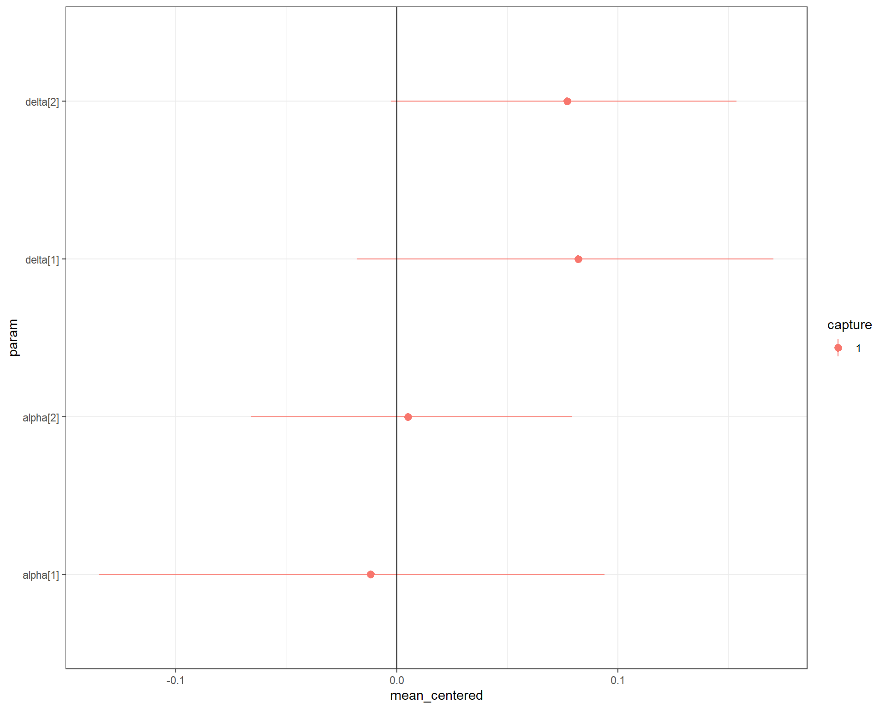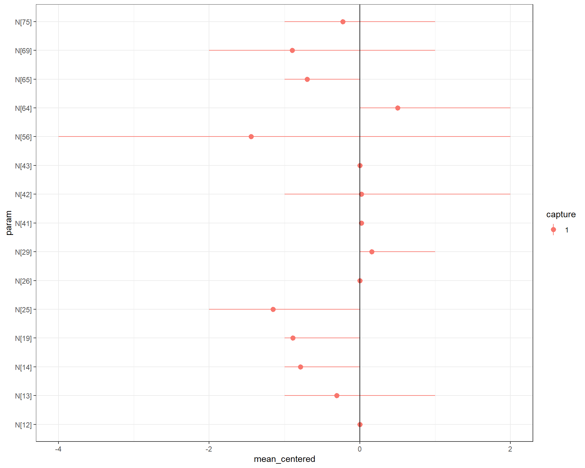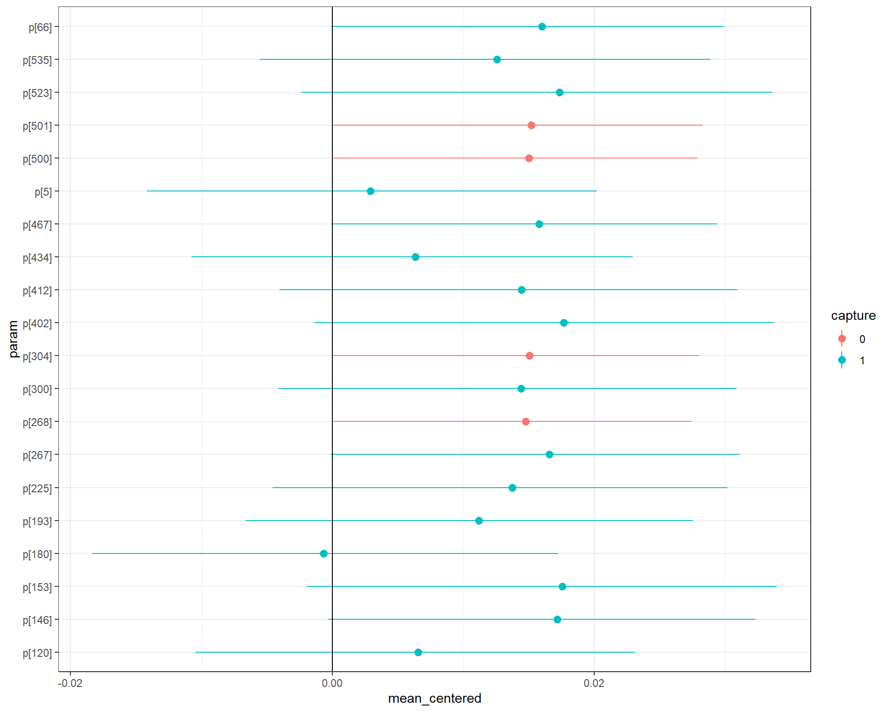
Baby simulation study
Twenty simulated data sets with random generating values.
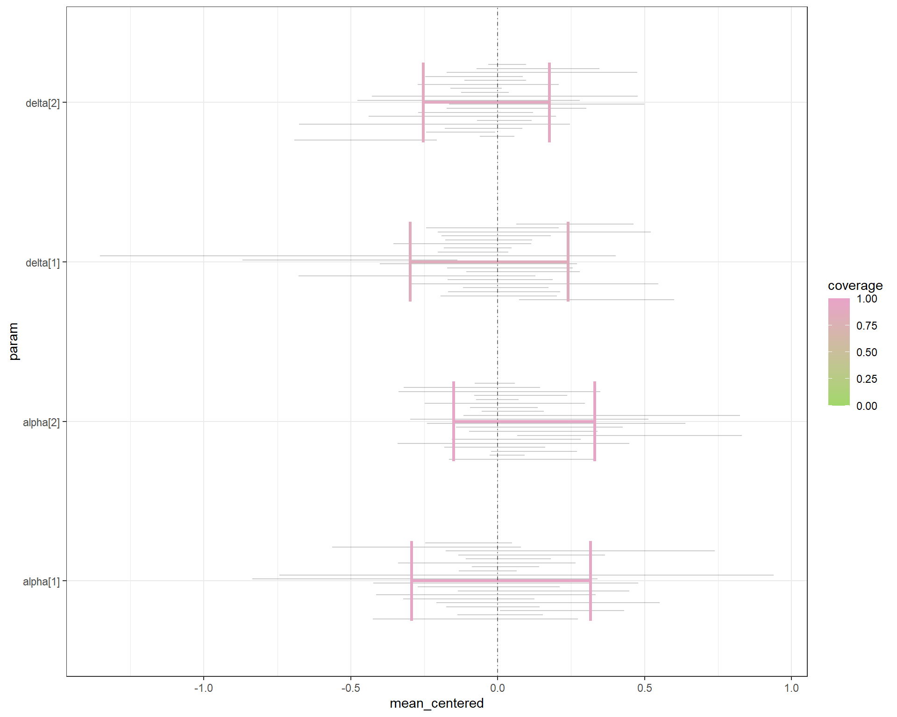
Negative binomial N-mixture model
{
for (site in 1:nsites) {
log(lambda[site]) <- inprod(alpha[1:p_alpha], W[site,
1:p_alpha])
nbp[site] <- phi/(phi + lambda[site])
N[site] ~ dnegbin(prob = nbp[site], size = phi)
}
for (row in 1:nrows) {
logit(p[row]) <- inprod(delta[1:p_delta], V[row, 1:p_delta])
y[row] ~ dbinom(prob = p[row], size = N[site_ndx[row]])
}
for (i in 1:p_alpha) {
alpha[i] ~ dnorm(0, sd = 2)
}
for (i in 1:p_delta) {
delta[i] ~ dnorm(0, sd = 2)
}
phi ~ T(dnorm(0, 1), 0, Inf)
}Simulated data
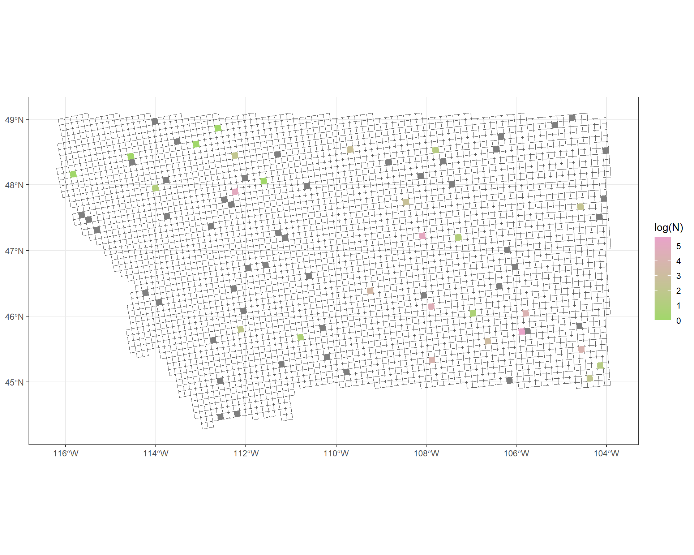
Fit model
Diagnostics

Posterior summaries
 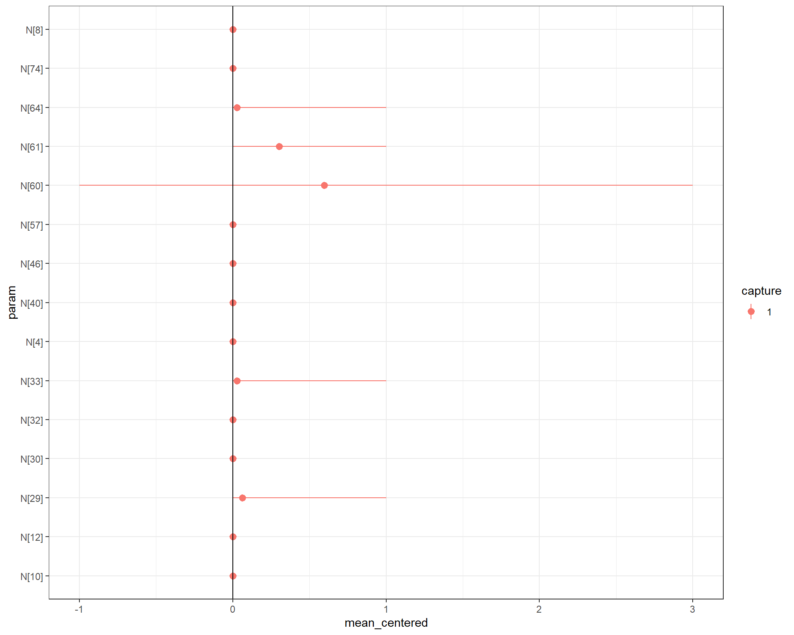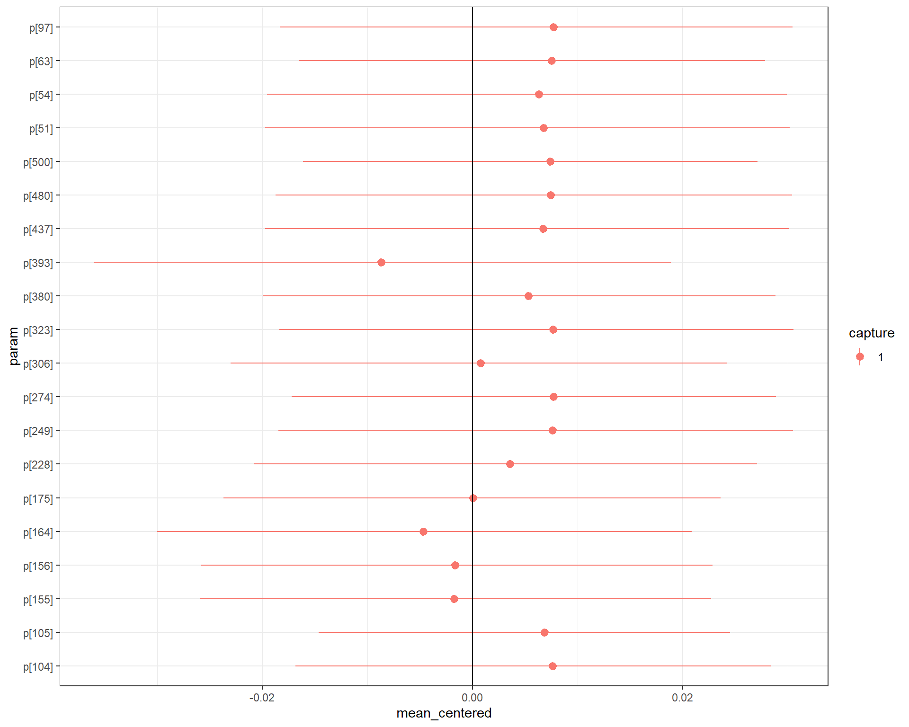
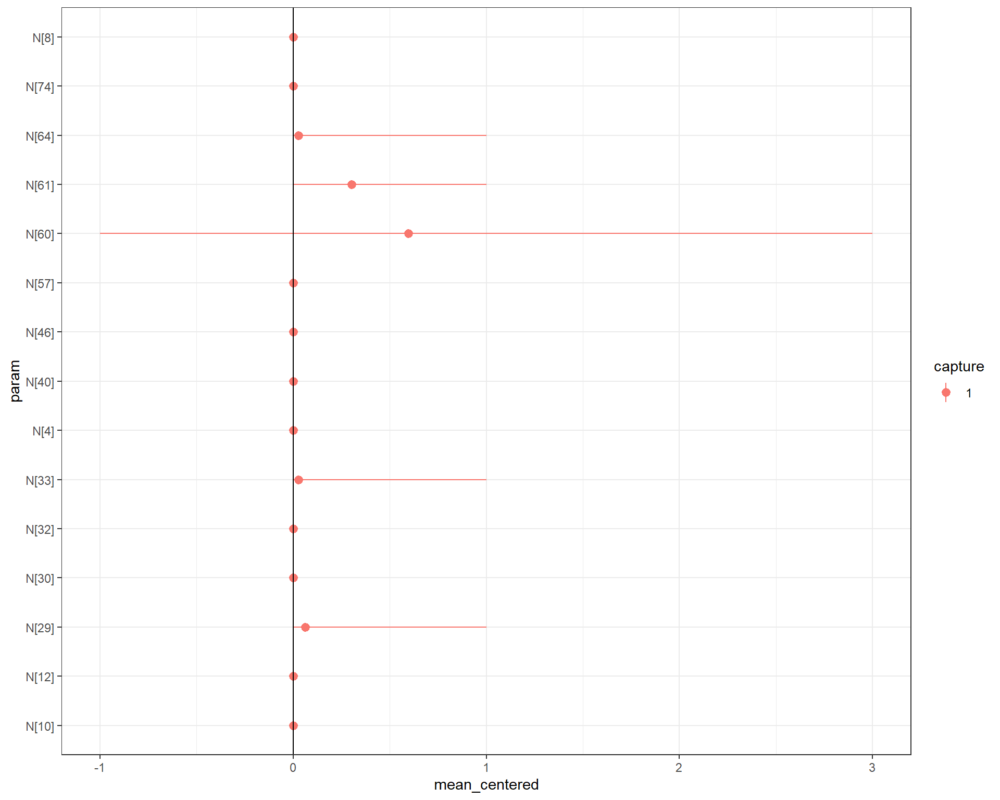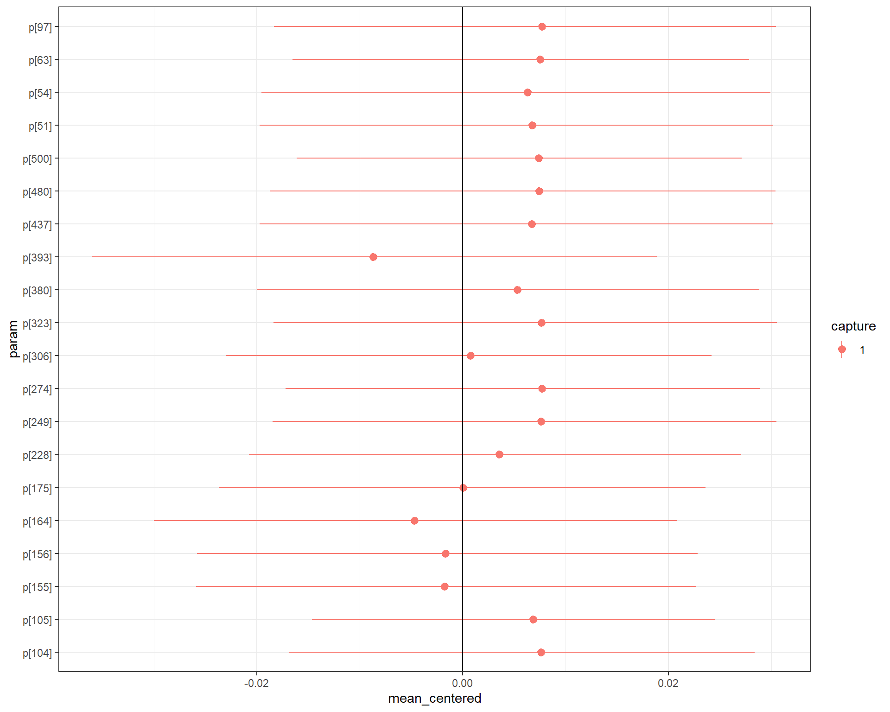
Baby simulation study
Twenty simulated data sets with random generating values.
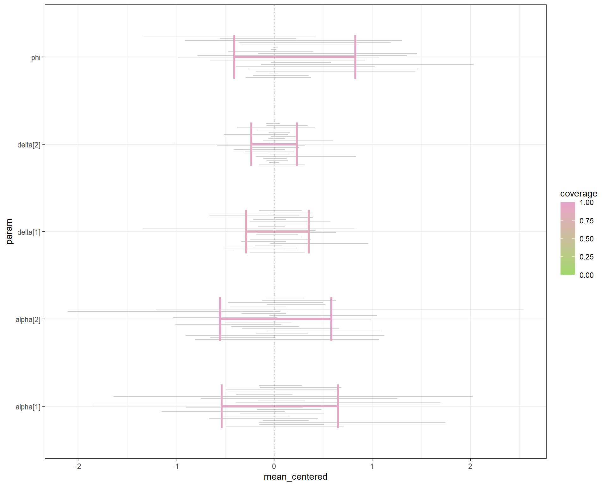
Internal colony count data
# A tibble: 78 5
# Groups: location_name, year, grts_id [77]
location_name year grts_id species_code nrow
<chr> <dbl> <dbl> <chr> <int>
1 Pearson Cave 1994 28379 MYGR 1
2 White Buis Cave 1994 50139 MYGR 1
3 Bellamy Cave 1994 54971 MYGR 1
4 Ament Cave 1994 56635 MYGR 1
5 Bertie 1 1996 126157 CORA 1
6 Rose Cave 2001 21051 MYGR 1
7 Bellamy Cave 2005 54971 MYGR 1
8 Rose Cave 2006 21051 MYGR 1
9 Oaks Cave 2006 46907 MYGR 1
10 White Buis Cave 2006 50139 MYGR 1
11 Bellamy Cave 2006 54971 MYGR 1
12 Rose Cave 2008 21051 MYGR 1
13 Pearson Cave 2008 28379 MYGR 1
14 Lost Creek Cave 2008 46907 MYGR 1
15 Oaks Cave 2008 46907 MYGR 1
16 Bellamy Cave 2008 54971 MYGR 1
17 Rose Cave 2009 21051 MYGR 1
18 Pearson Cave 2009 28379 MYGR 1
19 Oaks Cave 2009 46907 MYGR 1
20 White Buis Cave 2009 50139 MYGR 1
21 Bellamy Cave 2009 54971 MYGR 1
22 Ament Cave 2009 56635 MYGR 1
23 Rose Cave 2010 21051 MYGR 1
24 Pearson Cave 2010 28379 MYGR 1
25 Oaks Cave 2010 46907 MYGR 1
26 White Buis Cave 2010 50139 MYGR 1
27 Bellamy Cave 2010 54971 MYGR 1
28 Ament Cave 2010 56635 MYGR 1
29 Haywood 2 2010 61419 CORA 1
30 Rose Cave 2011 21051 MYGR 1
31 Pearson Cave 2011 28379 MYGR 1
32 Oaks Cave 2011 46907 MYGR 1
33 White Buis Cave 2011 50139 MYGR 1
34 Bellamy Cave 2011 54971 MYGR 1
35 Ament Cave 2011 56635 MYGR 1
36 Haywood 2 2011 61419 CORA 1
37 Rose Cave 2012 21051 MYGR 1
38 Pearson Cave 2012 28379 MYGR 1
39 Oaks Cave 2012 46907 MYGR 1
40 White Buis Cave 2012 50139 MYGR 1
41 Bellamy Cave 2012 54971 MYGR 1
42 Ament Cave 2012 56635 MYGR 1
43 Haywood 2 2012 61419 CORA 1
44 Haywood 3 2012 61419 CORA 2
45 Graham 1 2013 14907 MYLE 13
46 Haywood 2 2013 61419 CORA 1
47 Haywood 3 2013 61419 CORA 1
48 Graham 1 2014 14907 MYLE 3
49 Bellamy Cave 2014 54971 MYGR 1
50 Haywood 2 2014 61419 CORA 1
51 Haywood 3 2014 61419 CORA 1
52 Graham 1 2015 14907 MYLE 4
53 Bellamy Cave 2015 54971 MYGR 1
54 Haywood 2 2015 61419 CORA 1
55 Haywood 3 2015 61419 CORA 1
56 Graham 1 2016 14907 MYLE 11
57 Bellamy Cave 2016 54971 MYGR 1
58 Haywood 2 2016 61419 CORA 2
59 Haywood 3 2016 61419 CORA 1
60 Graham 1 2017 14907 MYLE 4
61 Pearson Cave 2017 28379 MYGR 1
62 Oaks Cave 2017 46907 MYGR 1
63 Bellamy Cave 2017 54971 MYGR 1
64 Haywood 2 2017 61419 CORA 2
65 Haywood 3 2017 61419 CORA 2
66 Rattling Cave 2017 101591 MYGR 1
67 Graham 1 2018 14907 MYLE 3
68 Pearson Cave 2018 28379 MYGR 1
69 Oaks Cave 2018 46907 MYGR 1
70 Haywood 2 2018 61419 CORA 2
71 Haywood 3 2018 61419 CORA 1
72 Rattling Cave 2018 101591 MYGR 1
73 Graham 1 2019 14907 MYLE 3
74 Pearson Cave 2019 28379 MYGR 1
75 Bellamy Cave 2019 54971 MYGR 1
76 Haywood 2 2019 61419 CORA 1
77 Haywood 3 2019 61419 CORA 1
78 Haywood 3 2019 61419 EPFU 1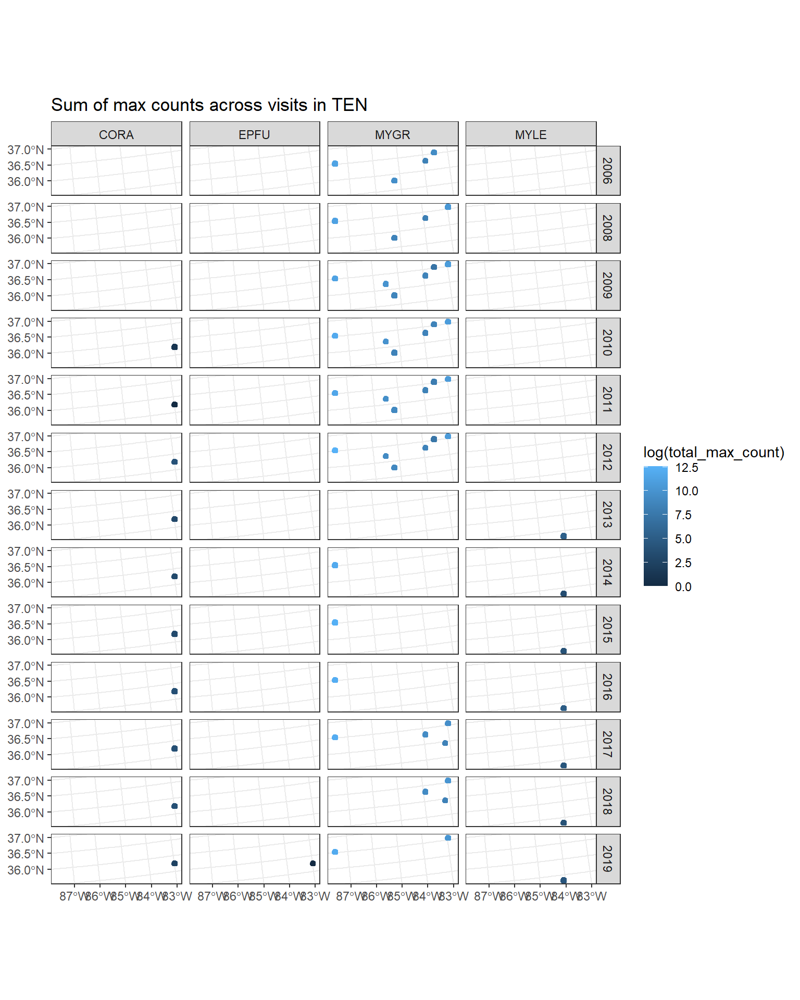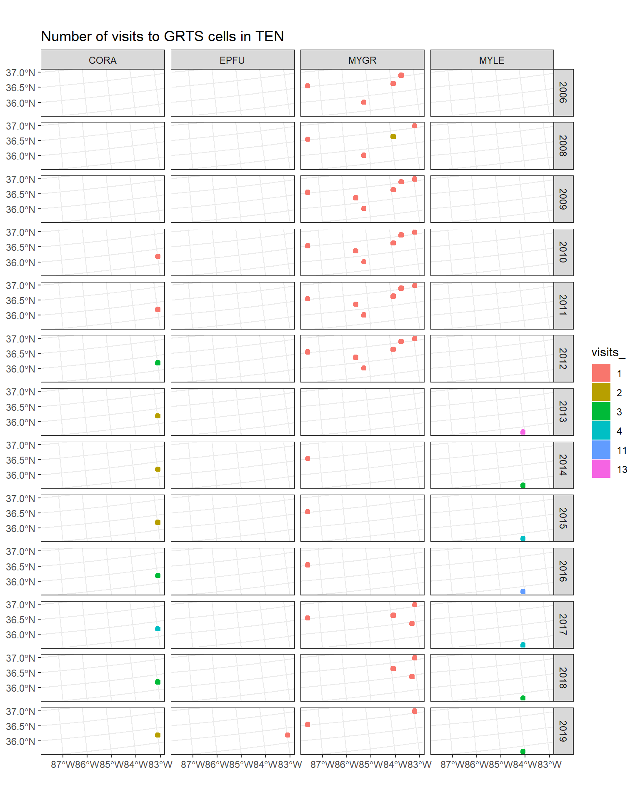
# A tibble: 134 4
# Groups: location_name, year [131]
location_name year grts_id nrow
<chr> <dbl> <dbl> <int>
1 Brunswick 1 1994 63788 1
2 Bertie 1 1996 126157 1
3 Robeson 1 2000 48107 1
4 Robeson 2 2000 71609 2
5 Davidson 1 2001 75171 1
6 Swain 1 2002 97254 1
7 Avery 1 2003 58300 1
8 Swain 1 2003 106686 3
9 Avery 1 2004 58300 2
10 Duplin 1 2005 69054 1
11 Swain 2 2005 106686 1
12 Avery 1 2006 58300 7
13 Macon 2 2006 80031 1
14 Bladen 2 2006 130109 1
15 Haywood 1 2007 12267 1
16 Bladen 1 2007 28204 2
17 Avery 1 2007 58300 4
18 Bladen 3 2007 130109 1
19 Avery 1 2008 58300 4
20 Rutherford 1 2008 63916 1
21 Jackson 2 2008 90481 1
22 Avery 1 2009 58300 8
23 Clay 1 2009 92051 1
24 Haywood 4 2010 8939 1
25 Durham 1 2010 10412 1
26 Macon 1 2010 41596 1
27 Swain 2 2010 44779 5
28 Jackson 1 2010 48875 1
29 Avery 1 2010 58300 4
30 Haywood 2 2010 61419 1
31 Macon 1 2010 80031 1
32 Macon 3 2010 88393 2
33 Swain 1 2010 106686 6
34 Haywood 4 2011 8939 1
35 Durham 1 2011 10412 1
36 Swain 2 2011 44779 1
37 Haywood 2 2011 61419 1
38 Jackson 1 2011 65259 1
39 Swain 1 2011 106686 3
40 Haywood 4 2012 8939 3
41 Haywood 5 2012 8939 2
42 Swain 2 2012 44779 9
43 Transylvania 1 2012 44779 1
44 Avery 1 2012 58300 4
45 Haywood 2 2012 61419 1
46 Haywood 3 2012 61419 2
47 Jackson 1 2012 65259 2
48 Macon 1 2012 80031 2
49 Swain 1 2012 106686 11
50 Haywood 4 2013 8939 1
51 Graham 1 2013 14907 13
52 Buncombe 1 2013 15339 1
53 Swain 2 2013 44779 4
54 Madison 6 2013 48107 3
55 Avery 1 2013 58300 2
56 Haywood 2 2013 61419 1
57 Haywood 3 2013 61419 1
58 Jackson 1 2013 65259 2
59 Macon 1 2013 80031 1
60 Swain 1 2013 106686 5
61 Haywood 4 2014 8939 3
62 Graham 1 2014 14907 3
63 Swain 2 2014 44779 6
64 Avery 1 2014 58300 2
65 Haywood 2 2014 61419 1
66 Haywood 3 2014 61419 1
67 Jackson 1 2014 65259 2
68 Macon 1 2014 80031 1
69 Beafort 1 2014 97662 1
70 Swain 1 2014 106686 8
71 Haywood 4 2015 8939 2
72 Graham 1 2015 14907 4
73 Swain 2 2015 44779 7
74 Avery 1 2015 58300 2
75 Haywood 2 2015 61419 1
76 Haywood 3 2015 61419 1
77 Jackson 1 2015 65259 1
78 Macon 1 2015 80031 3
79 Swain 1 2015 106686 12
80 Haywood 4 2016 8939 1
81 Graham 1 2016 14907 11
82 Buncombe 1 2016 15339 27
83 Swain 2 2016 44779 10
84 Madison 1 2016 48107 2
85 Madison 4 2016 48107 2
86 Avery 1 2016 58300 2
87 Haywood 2 2016 61419 2
88 Haywood 3 2016 61419 1
89 Macon 1 2016 80031 1
90 Madison 4 2016 81727 1
91 Madison 1 2016 88393 1
92 Johnston 1 2016 90481 1
93 Swain 1 2016 106686 11
94 Haywood 4 2017 8939 1
95 Haywood 1 2017 12267 1
96 Graham 1 2017 14907 4
97 Buncombe 1 2017 15339 12
98 Bladen 1 2017 28204 2
99 Madison 2 2017 40939 2
100 Swain 2 2017 44779 8
101 Madison 1 2017 48107 13
102 Madison 4 2017 48107 4
103 Madison 5 2017 48107 13
104 Jackson 1 2017 59115 1
105 Haywood 2 2017 61419 2
106 Haywood 3 2017 61419 2
107 Macon 1 2017 80031 1
108 Madison 3 2017 81727 6
109 Swain 1 2017 106686 9
110 Haywood 4 2018 8939 1
111 Haywood 6 2018 13035 2
112 Graham 1 2018 14907 3
113 Swain 2 2018 44779 8
114 Haywood 2 2018 61419 2
115 Haywood 3 2018 61419 1
116 Jackson 1 2018 65259 1
117 Cherokee 1 2018 77415 3
118 Macon 1 2018 80031 1
119 Swain 1 2018 106686 8
120 Haywood 4 2019 8939 1
121 Graham 1 2019 14907 3
122 Swain 2 2019 44779 9
123 Haywood 2 2019 61419 1
124 Haywood 3 2019 61419 2
125 Jackson 1 2019 65259 1
126 Macon 1 2019 80031 1
127 Swain 1 2019 106686 9
128 Yancey 2 2019 112019 1
129 Haywood 4 2020 8939 1
130 Haywood 5 2020 8939 2
131 Jackson 1 2020 65259 1
132 Macon 1 2020 80031 1
133 Clay 1 2020 92051 1
134 Swain 1 2020 106686 3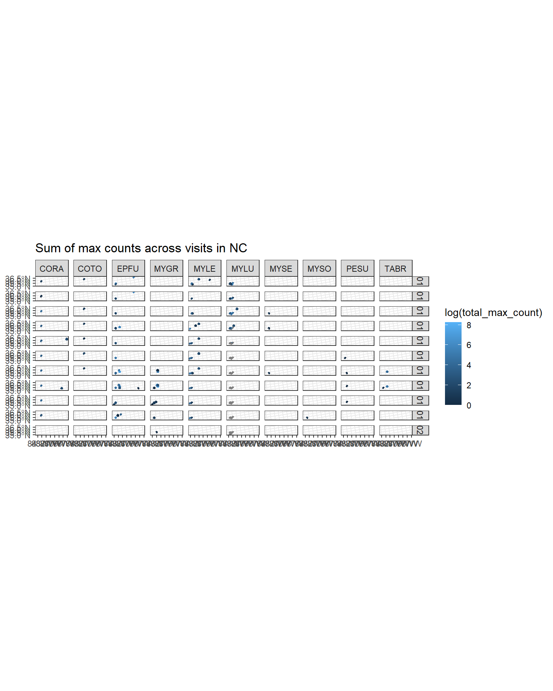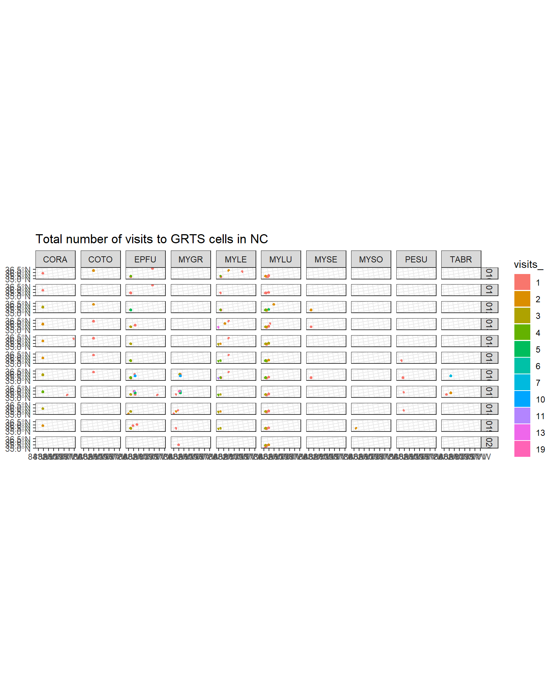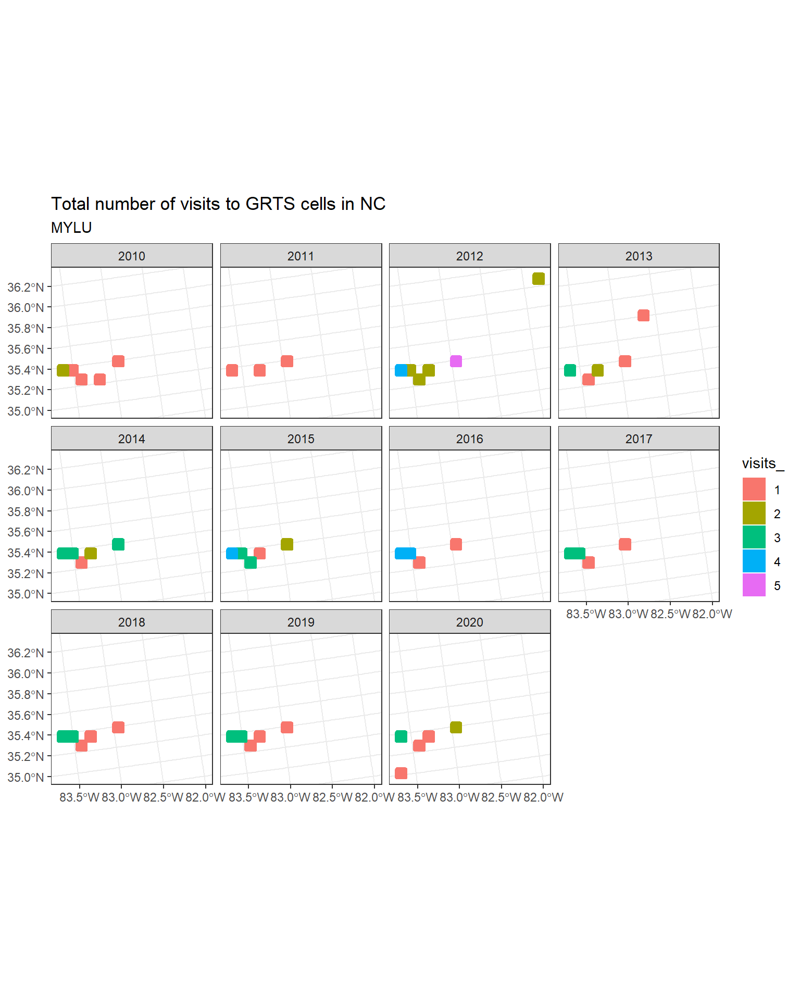